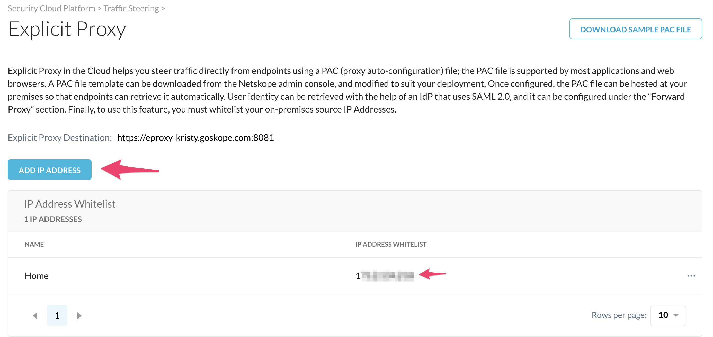
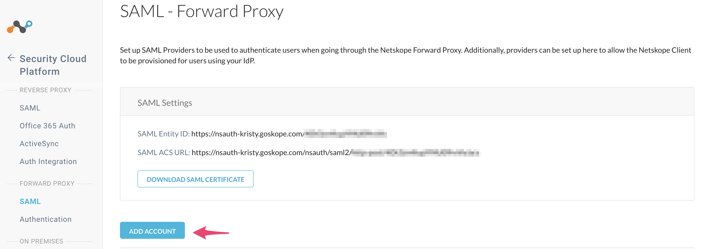
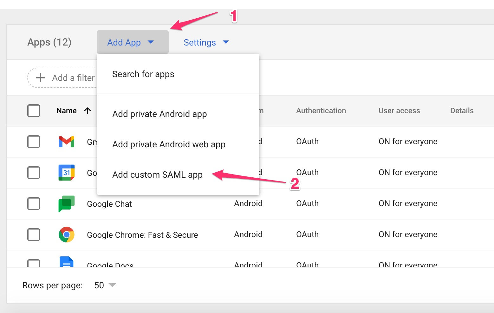
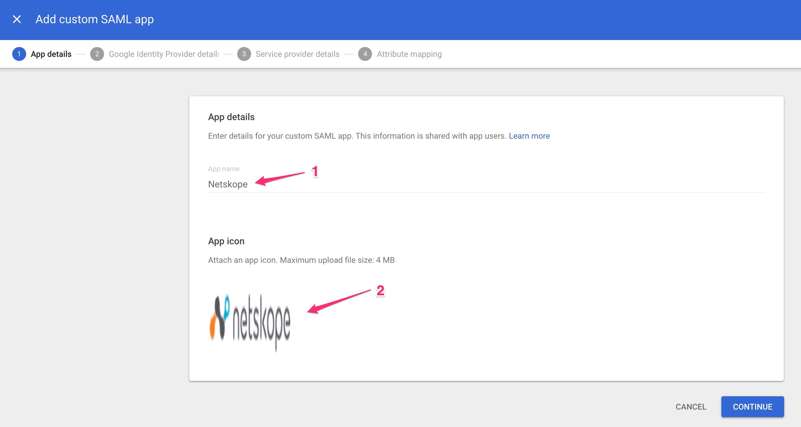
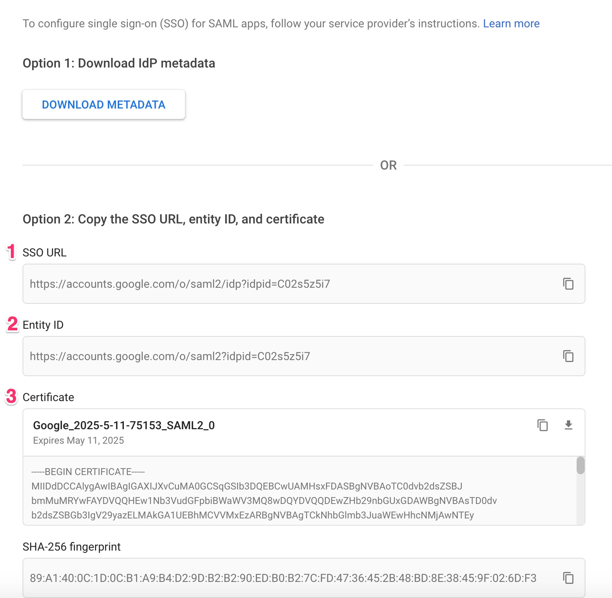
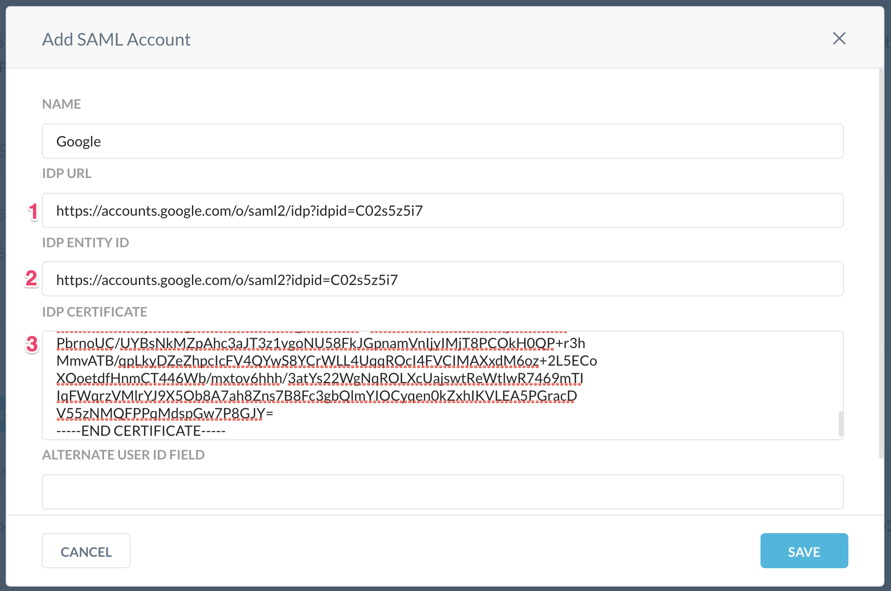
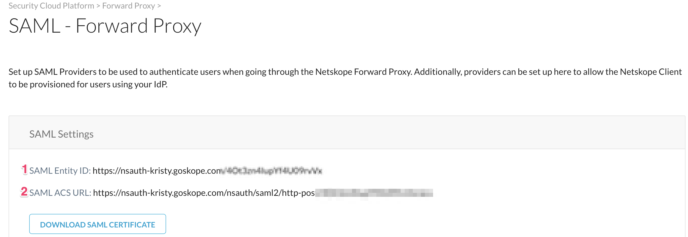
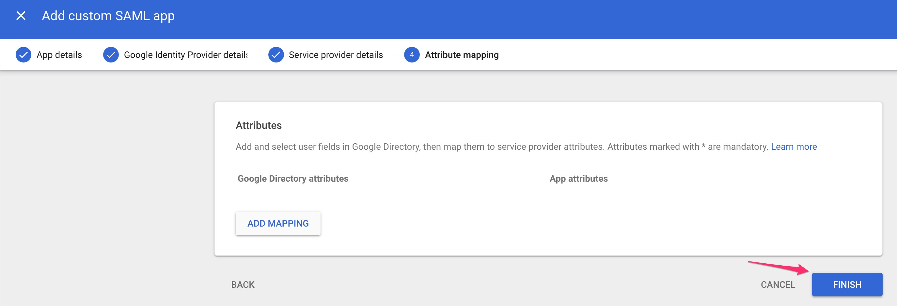
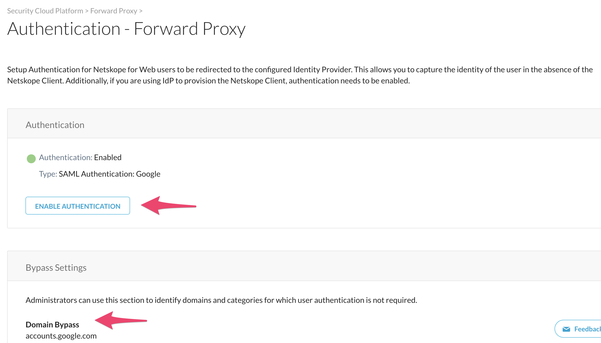

Configure SAML Forward Proxy for Google
Log in to the Netskope UI and go to Settings >Security Cloud Platform >Traffic Steering > Explicit Proxy (will only display if you have Explicit Proxy enabled).
Add the IP address(es) traffic will egress the network from Public IP.
 Go to Settings >Security Cloud Platform > Forward Proxy > SAML and click Add Account.
 In another browser tab, log in to the Google management console admin.google.com, go to Apps > SAML Apps,and then click Add App and select Add custom SAML app.
 Enter Netskope for the name, optionally add a logo, and then click Continue.
 A window with the Google IdP information opens. Copy the SSO URL and Entity ID, and then download the certificate.
 Return to the Netskope Add SAML Account window and enter the SSO URL (IDP URL in the Netskope Console), Entity ID, and IdP certificate into the Netskope console. To get the certificate you downloaded, open it in your favorite text editor to copy and paste it here. Leave the other fields blank, and then click Save.
 Next, go to Settings > Security Cloud Platform > Forward Proxy > SAML to get the service provider details needed in the next step. Copy the SAML Entity ID and ACS URL.
 Return to the Google admin console and click Continue, which opens the Service Provider Details screen. Enter the ACS URL and Entity ID, and then click Continue.
Note
The ACS URL is the 2nd item in the Netskope console, but the 1st item in the Google Admin Console.

Leave the Attribute Mapping screen blank and click Finish.
 In the Netskope UI, go to Settings > Security Cloud Platform > Forward Proxy > Authentication, and add accounts.google.com to the Domain Bypass, then click Enable Authentication to activate the Enabled toggle. At this point SAML forward proxy is ready to go.

In order to test, you need an endpoint that is pointing to the explicit proxy. You can test with a device, or proceed to to the next section to configure explicit proxy on your Chromebook devices.